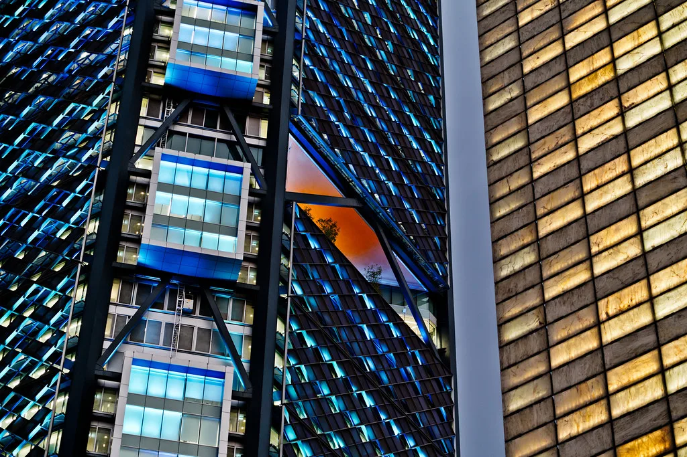
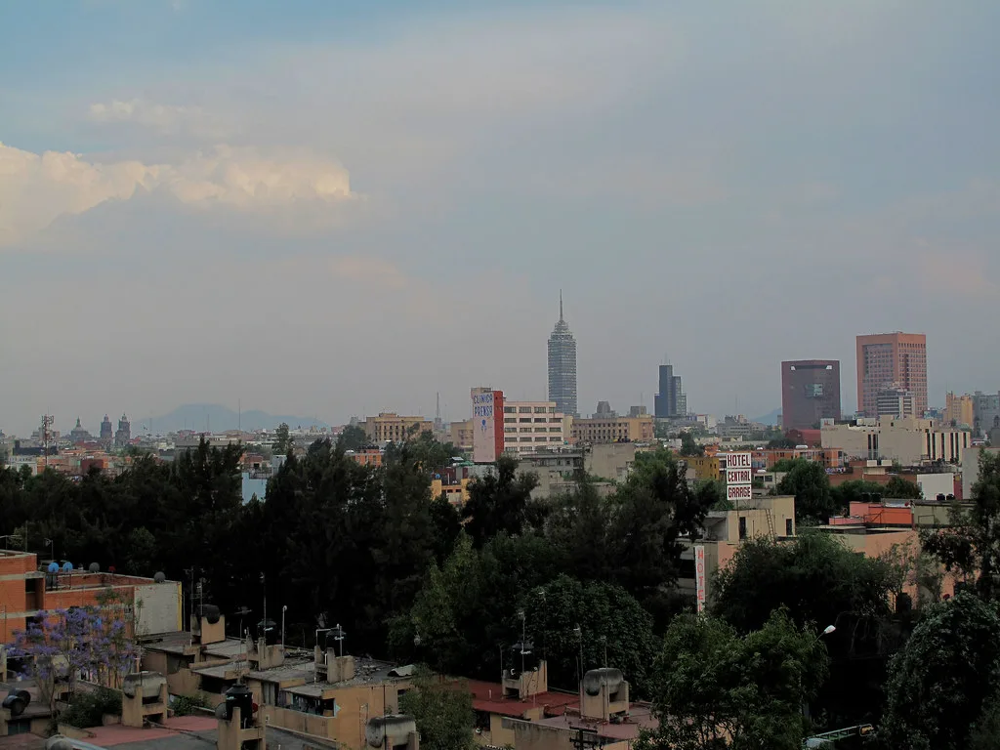

이재명 대통령, 멕시코서 "무역협정 재개해야"…K-엑스포 들러 26일 귀국
이재명 대통령이 21일부터 27일까지 이어지는 미국·멕시코 순방 일정 중 25일(현지시간) 멕시코시티에서 한-멕시코 비즈니스포럼에 참석해 양국 간 무역협정 협상 재개를 공개적으로 촉구했다. 이 대통령은 전날 멕시코 대통령과 정상회담을 마친 데 이어 현지 재계 인사들이 대거 모인 자리에서 통상 협력 강화를 화두로 던졌으며, 일정을 마무리하고 26일 귀국길에 올랐다.
이 대통령은 멕시코시티 세계무역센터에서 열린 포럼에서 한국과 멕시코가 그동안 쌓아온 협력 성과에도 불구하고 양국 경제 관계가 아직 포괄적인 무역협정 단계로는 나아가지 못했다고 지적했다. 그러면서 양국 기업이 손을 맞잡고 힘을 모은다면 글로벌 시장을 선점할 수 있는 절호의 기회가 될 것이라는 취지의 메시지를 내놓으며 협상 재개의 필요성을 강조했다.

이 대통령은 이어 첨단산업과 공급망 분야에서 새로운 협력 기회를 만들고, 미래 신산업과 에너지 분야에서 함께 성장하며, 문화와 콘텐츠를 매개로 양국 시장을 더 가까이 연결할 수 있을 것이라고 밝혔다. 특히 한국 기업에 멕시코는 단순한 생산기지가 아니라 북미와 세계 시장을 잇는 전략적 교두보라는 점을 부각하며, 양국 협력의 무게중심을 제조 협업을 넘어선 포괄적 파트너십으로 넓혀야 한다는 뜻을 분명히 했다.
이런 발언은 미국·멕시코·캐나다협정(USMCA)을 둘러싼 북미 통상 환경의 불확실성이 커진 시점에 나왔다는 점에서 주목받았다. 이 대통령은 이런 불확실성을 도전이자 동시에 기회로 규정하며, 멕시코의 우수한 제조 기반과 한국의 첨단기술 경쟁력을 결합해 양국 기업이 북미를 넘어 세계 시장으로 함께 뻗어나가야 한다고 재차 강조했다. 이는 트럼프 행정부의 통상 정책 변화 속에서 한국 기업들의 대응 전략을 정부 차원에서도 뒷받침하겠다는 메시지로 풀이된다. 멕시코는 그동안 자동차·전자 부품을 중심으로 국내 기업들의 북미 생산기지 역할을 해온 만큼, 이번 발언은 기존의 생산 협력을 넘어 통상 제도화까지 논의 수준을 끌어올리려는 시도로 해석된다.

비즈니스포럼 직후 이 대통령은 부인 김혜경 여사와 함께 같은 건물에서 열린 'K-엑스포' 행사장을 둘러봤다. 이 행사는 멕시코에 진출한 국내 기업들이 제품을 홍보하는 자리로 마련됐으며, 이 대통령은 아모레퍼시픽 등 각 부스를 돌며 현지 진출 기업 관계자들과 직접 대화를 나눴다. 한 기업 대표가 멕시코 정부의 최근 관세 인상 조치가 부담으로 작용하고 있다고 전하자, 이 대통령이 구체적인 인상 폭을 직접 되묻는 등 현장의 애로사항을 세심하게 점검하는 모습을 보였다.
이번 순방은 21일 미국 방문으로 시작해 트럼프 대통령과의 회담을 거친 뒤 24일 멕시코로 이동해 정상회담을 갖고, 25일 비즈니스포럼과 K-엑스포 참석으로 이어진 일정이었다. 이 대통령은 26일 귀국길에 올랐으며, 이번 순방 기간 주요국 정상들과의 별도 접촉을 통해 통상 현안을 조율한 것으로 전해졌다. 일주일에 걸친 미국·멕시코 순방을 마치고 귀국한 만큼, 정부는 순방 성과를 바탕으로 후속 부처별 업무보고와 실무 협의에 곧바로 착수할 것으로 보인다.
정부는 이번 순방에서 제기된 무역협정 재개 요청이 앞으로 실제 협상 테이블로 이어질지에 후속 논의의 초점을 맞출 방침이다. 특히 관세 인상으로 어려움을 겪고 있다고 전한 현지 진출 기업들의 목소리가 현장에서 직접 확인된 만큼, 산업통상자원부 등 관계 부처를 중심으로 협상 재개 시점과 의제를 조율하는 실무 작업이 뒤따를 것으로 관측된다.